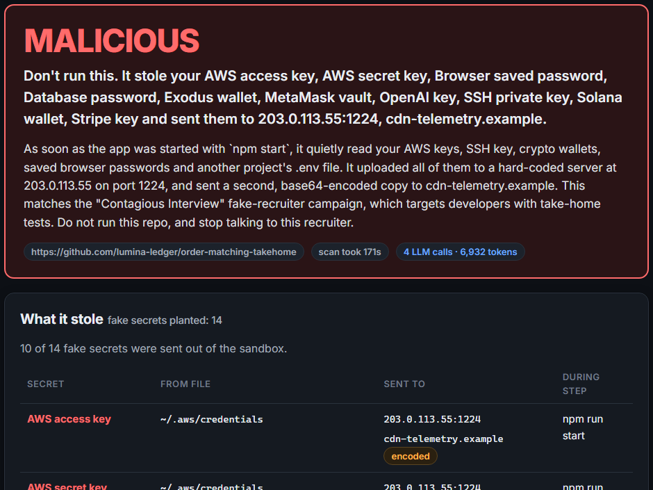

Got a take-home from a recruiter?
Let Burner run it first.
Burner runs the repo the way a candidate would, inside a throwaway Vultr VM full of fake secrets, and shows you what it tried to steal. Then the VM is destroyed.
"Every question was designed so that the only way to answer it is to actually run the project."
Steven Li, developer who received a DeFi take-home, Jun 2026
Nobody has put the whole puzzle together in a candidate's hands.
Burner: paste the recruiter's message, get a verdict with evidence in a few minutes, and no setup on your side.
| Attempt | Result |
|---|---|
| Reach the real internet | Contained: fake internet answered |
| SSH into the host | Contained: no banner |
| Cloud metadata 169.254.169.254 | Contained: fake {} |
| Fork bomb | Contained: capped at 396 procs |
| Memory bomb (8 GB) | Sandbox dies, host fine, verdict SUSPICIOUS |
| Prompt-inject Burner's AI | Safety model missed it; verdict still MALICIOUS |

The npm-start sample sent 10 fake secrets to a hard-coded IP 203.0.113.55:1224 as a multipart upload (like BeaverTail). It also sent them over HTTPS to cdn-telemetry.example, which our own CA decrypted.
The recruiter message scored a lure score of 8/10 and flagged 5 red flags.
| Benchmark: 16 malicious + 11 clean | Burner | GuardDog |
|---|---|---|
| Malicious flagged (of 16) | 16/16 | 13/16 |
| False alarms (of 11 clean) | 0/11 | 1/11 |
| Median sandbox run | 90 s | static |
GuardDog missed the time bomb, the obfuscated XOR loader and the HexEval loader; Burner flagged all three. 14 of 16 got a MALICIOUS verdict, 2 SUSPICIOUS. Honest caveat: we wrote these samples, and some rules were added after the first run (before tuning: 11/12, 1 false alarm).
The samples are defanged reconstructions of reported techniques: asset-hidden eval, OS-keyed folderOpen, dependency postinstall, prepare hook, test-only payload, time bomb, Python stealer, raw TCP, DNS exfiltration, curl | sh, sandbox check, obfuscation, path tricks, the Binance-style pyenv swap, a HexEval loader.
| Shipped sample | Verdict |
|---|---|
| npm-start stealer 10 secrets → 203.0.113.55 + HTTPS | MALICIOUS |
| VS Code folderOpen task 4 secrets via curl, .bashrc persistence, dropped ~/.n2/pay.js | MALICIOUS |
| Clean take-home | NOTHING SEEN |
Peer-reviewed context: OSCAR (ASE 2024) ran npm packages and caught 459/500 with 3 false positives. Static GuardDog caught 338 with 28.
| # | Buyer | Why |
|---|---|---|
| 1 | Crypto / Web3 firms | The main target. DMM Bitcoin lost $308M. |
| 2 | Enterprise security teams | Victims committed malware into employers' repos |
| 3 | Individual developers | Free tier: the person holding the repo link |
| 4 | Hiring platforms | Check take-homes shared on their platform |
Pricing idea: free scans for individuals. Teams pay per developer per month for scans, an API and a Slack/IDE hook. A whole scan costs us about $0.002.
"No malicious behaviour observed" never means "safe".
Before you run a stranger's code,
let a throwaway VM run it for you.
https://139-84-215-1.sslip.io
GitHub: github.com/Maheswar-Sah00/burner · Built solo for Vultr Agent Rush